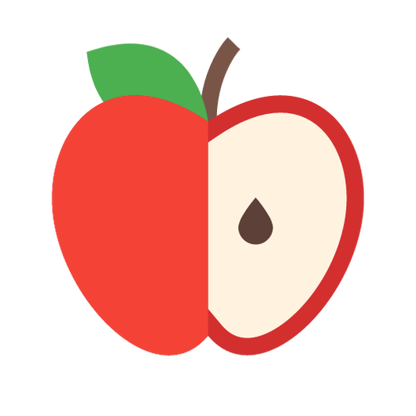

<nav class="navbar navbar-expand-lg navbar-light bg-light">
  
  <button class="navbar-toggler" type="button" (click)="isCollapsed = !isCollapsed" aria-controls="navbarSupportedContent" [attr.aria-expanded]="!isCollapsed" aria-label="Toggle navigation">
    <span class="navbar-toggler-icon"></span>
  </button>

  <div class="collapse navbar-collapse" id="navbarSupportedContent" [ngbCollapse]="isCollapsed">
    <ul class="navbar-nav mr-auto">
      <li class="nav-item active" *ngFor="let category of categories">
        <a class="nav-link" href="#">{{category.name}} <span class="sr-only">(current)</span></a>
      </li>
    </ul>
    <form class="form-inline my-2 my-lg-0">
      <input class="form-control mr-sm-2" type="text" placeholder="Search" aria-label="Search">
      <button class="btn btn-outline-success my-2 my-sm-0" type="submit">Search</button>
    </form>
  </div>
</nav>